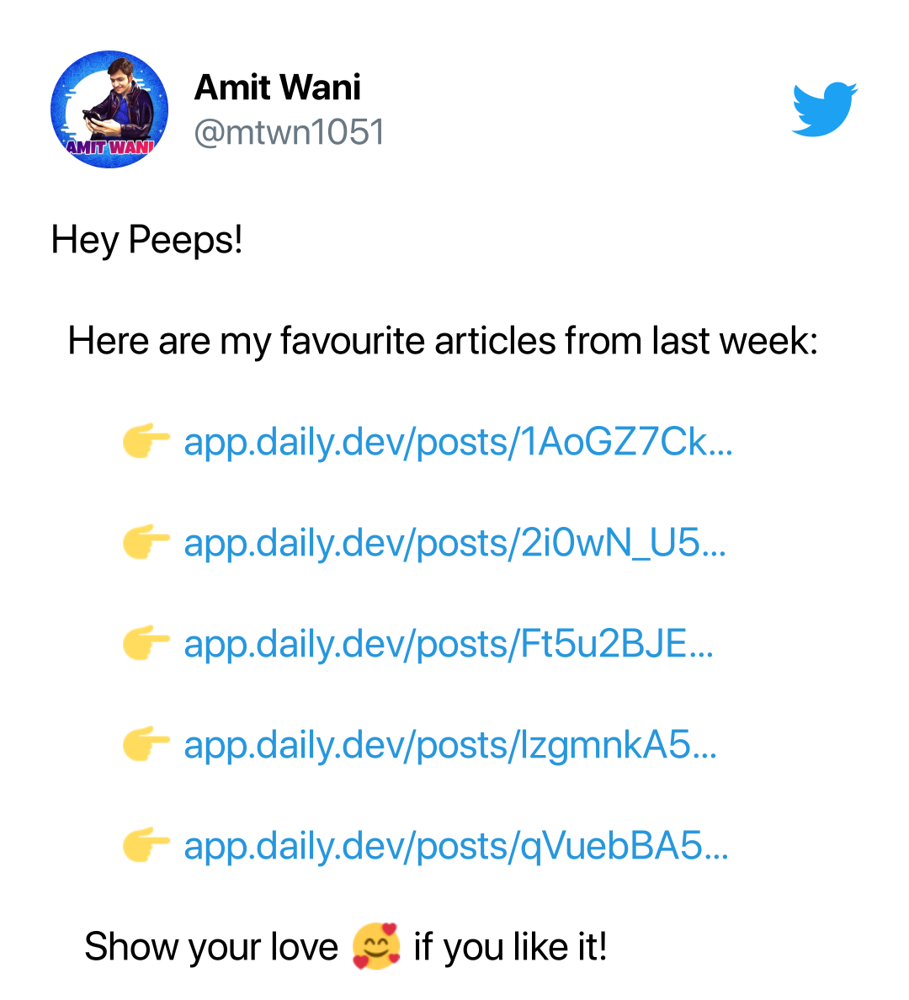

<div class="jumbotron jumbotron-fluid">
  <div class="container">
    <ng-container *ngIf="!authService.isLoggedIn">
      <div class="row">

        <div class="col-md">
          <h1 class="display-4">Hello!</h1>
          <p class="lead">I will post tweet of your bookmarked pages from Daily.Dev every week! Like this 👉</p>
          <p>Sign in with twitter to get started</p>
          <a (click)="signInWithTwitter()" class="btn btn-primary btn-lg" role="button">Sign In with Twitter</a>

        </div>
        <div class="col-md">
          
        </div>

      </div>


      <hr class="my-4">

    </ng-container>
    <ng-container *ngIf="authService.isLoggedIn && authService.user">

      <h1 class="display-4">Hello, {{authService.user.name}}</h1>
      <p class="lead">I will post tweet of your bookmarked pages from Daily.Dev every week!</p>
      <hr class="my-4">
      <p><b>Paste your Daily.Dev RSS link here to get started:</b></p>


      <div class="input-group mb-3">
        <input [disabled]="verifyClicked" [(ngModel)]="url" type="text" class="form-control" type="url"
          placeholder="RSS Link" aria-label="link" aria-describedby="basic-addon1">
        <div class="input-group-append">
          <button *ngIf="!verifyClicked" [disabled]="!url || url.trim().length == 0" (click)="getBookmarks()"
            class="btn btn-success" type="button" id="button-addon2">Verify</button>
          <button *ngIf="verifyClicked" [disabled]="!url || url.trim().length == 0" (click)="verifyClicked = false"
            class="btn btn-primary" type="button" id="button-addon2">Change</button>
        </div>
      </div>

      <ng-container *ngIf="bookmarksError">
        <div class="alert alert-danger" role="alert">
          Not able to fetch bookmarks. Please check your RSS link.
        </div>
      </ng-container>

      <ng-container *ngIf="updateRssError">
        <div class="alert alert-danger" role="alert">
          Not able to update RSS Details. Please try again.
        </div>
      </ng-container>

      <ng-container *ngIf="updateRssSuccess">
        <div class="alert alert-success" role="alert">
          Successfully updated RSS Details. Now I will tweet your bookmarked pages from Daily.Dev every week.
        </div>
      </ng-container>

      <div *ngIf="bookmarks && !bookmarksError && verifyClicked">
        <p><b>Choose a day & time when your last week's bookmarks will be tweeted :</b></p>

        <div class="row">

          <div class="col-auto my-auto">

            <select (change)="updateRssSuccess = false" [(ngModel)]="day" class="form-control" id="day">
              <option value="Monday">Monday</option>
              <option value="Tuesday">Tuesday</option>
              <option value="Wednesday">Wednesday</option>
              <option value="Thursday">Thursday</option>
              <option value="Friday">Friday</option>
              <option value="Saturday">Saturday</option>
              <option value="Sunday">Sunday</option>
            </select>

          </div>
          <div class="col-auto ">
            <ngb-timepicker (ngModelChange)="updateRssSuccess = false" [(ngModel)]="time" [hourStep]="1"
              [minuteStep]="15"></ngb-timepicker>
          </div>

          <div class="col-auto my-auto"><button (click)="save()" class="btn btn-success" type="button"
              id="button-addon2">Submit</button></div>

        </div>

        <p>A tweet of your last week's bookmarked pages will be sent from your twitter
          (if there are any new bookmarks
          in your Daily.Dev) on every {{day}} on {{time.hour}}:{{time.minute == 0 ? "00" : time.minute}}</p>

      </div>
      <hr class="my-4">

      <ng-container *ngIf="bookmarks && !bookmarksError">

        <p><b>Daily.Dev Bookmarks :</b></p>

        <table class="table table-striped">
          <thead>
            <tr>
              <th scope="col">#</th>
              <th scope="col">Title</th>
              <th scope="col">Link</th>
              <th scope="col">Date</th>
            </tr>
          </thead>
          <tbody>
            <tr *ngFor="let bookmark of bookmarks; index as i">
              <th scope="row">{{ i + 1 }}</th>
              <td>
                {{ bookmark.title }}
              </td>
              <td><a [href]="bookmark.link" target="_blank">Link</a></td>
              <td>{{ bookmark.date | date: 'dd-MM-yyyy HH:mm' }}</td>
            </tr>
          </tbody>
        </table>

      </ng-container>

    </ng-container>
  </div>
</div>